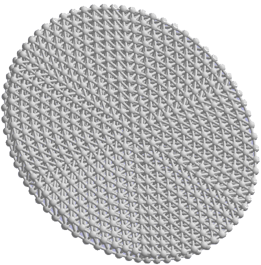
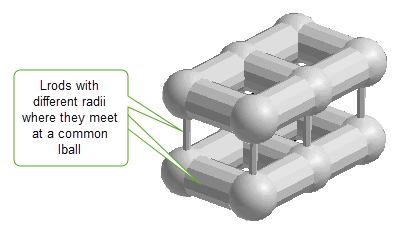
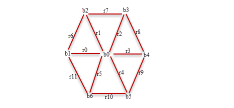
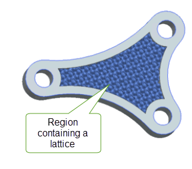
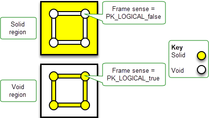
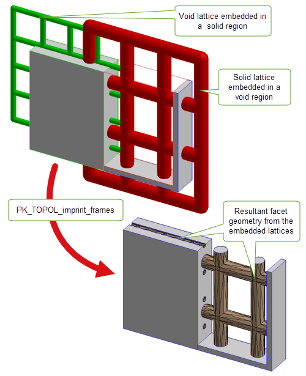
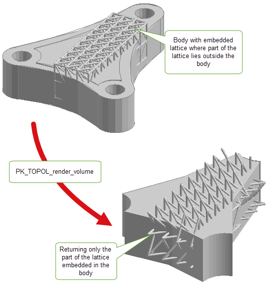
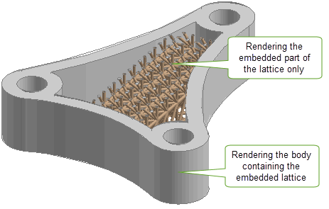

| |
Lattice Geometry |
| <<< Nominal Geometry | Chapters | Transformations >>> |
Lattices are classified as a geometry type which can be created, enquired of, rendered, embedded in a region and attached to parts as construction geometry. Lattices can be used to create mesh geometry and solid convergent bodies. Furthermore, you can create a lattice structure from patterned repetitions of a supplied smaller core lattice.
Lattices can be rendered as straight lines, or as solid spheres linked by cylindrical or conical rods (as illustrated in Figure 20-1).
Lattices are represented as collections of lballs joined by lrods (collectively known as lattice topology or ltopols). The radii of lrods can be different where they meet at a common lball, as illustrated in Figure 20-2.
Figure 20-2 Lattice with lrods of different radii meeting at a common lball
You can use PK_PARTITION_ask_lattices, or PK_TOPOL_find_frames to find out if a partition or model contains lattice geometry. See their respective APIs in the PK Interface Programming Reference Manual for more information.
Parasolid provides the function PK_LATTICE_create_by_graph to allow you to create orphan lattice geometry from data supplied by a user-defined callback function.
The function receives the following arguments:
|
A user-defined callback function.See Section 20.2.1, “Using the graph reader”, for more information. |
|
The function has the following options:
|
Estimated number of all lballs returned by all calls to |
|
|
Estimated number of all lrods returned by all calls to |
|
|
Function to free data blocks returned by |
|
|
Whether the |
|
|
Controls behaviour when a supplied lball radius is smaller than the radius of its largest incident lrod. This can have the following values:
|
|
|
Whether the lattices are blended. Default: PK_LBALL_blend_none_c See Section 20.5, “Creating a blended lattice” for more information. |
|
|
The size of the lball blends in the lattices. Default: 0 See Section 20.5, “Creating a blended lattice” for more information. |
|
|
Optional controls on the shape of the lrods of the lattices. |
|
|
If
The |
|
|
Whether each resultant lattice is graph-connected (i.e any lball can be reached from any other lball by stepping between lballs that are connected by an lrod). It has the following values:
|
Figure 20-3 Snapping lballs together that lie within a supplied
snap_tolerance
|
Note: To make use of lattice functionality, facet geometry must be enabled in the Parasolid session. You can do this by setting PK_SESSION_set_facet_geometry to PK_facet_geometry_all_c. Facet geometry should only be enabled in a released application if the appropriate additional license costs have been paid. |
This section describes how the callback function,
graph_reader
, is used to create lattice geometry from graph data. The
graph_reader
takes a block of user supplied context information and should return a block of lattice data and a return status. The block of lattice data can be one of two types; cylinder or cone. See Section 20.2.2, “Graph types” for more information.The return status indicates the state of the operation. The
graph_reader
is called repeatedly by PK_LATTICE_create_by_graph until it returns the status PK_LATTICE_cb_status_stop_c.
This section describes the two types of data blocks (cylinder and cone) that can be returned by each call to
graph_reader
.
This structure contains the data block for lattices with cylindrical shaped lrods. The lballs are provided by arrays of
lball_positions
and
lball_radii
. The
lrod_start_indices
and
lrod_end_indices
arrays define an array of lrods by specifying the absolute indices of the pair of lballs that each lrod joins.
Individual blend sizes of the lballs within the data block can be supplied via
lball_blend_sizes
. If the lattice is to be blended, these sizes together with the value of the
lball_blend_type
option determine the radii of the blends applied at each of the lballs. See Section 20.5.2, “Blended lattices with lballs of various blend sizes” for more information.
The following pseudo-code example shows the data input when using PK_LATTICE_graph_cyl_t to transmit a block of lattice data.
lball_blend_sizes = NULL lrod_radii = {lr0,lr1,lr2,...,lr11} |
This structure contains the data block for lattices with cone-shaped lrods. The lballs are provided by arrays of
lball_positions
and
lball_radii
.The
lrod_start_indices
and
lrod_end_indices
arrays define an array of lrods by specifying the absolute indices of the pair of lballs that each lrod joins.
Individual blend sizes of the lballs within the data block can be supplied via
lball_blend_sizes
. If the lattice is to be blended, these sizes together with the value of the
lball_blend_type
option determine the radii of the blends applied at each of the lballs. See Section 20.5.2, “Blended lattices with lballs of various blend sizes” for more information.
The following pseudo-code example shows the data input when using PK_LATTICE_graph_cone_t to transmit a block of lattice data.
lball_blend_sizes = NULL lrod_start_radii = {lsr0,lsr1,lsr2,...,lsr11} lrod_end_radii = {ler0,ler1,ler2,...,ler11} |
Figure 20-4 shows an example of a lattice structure
Figure 20-4 Example of lattice structure
You can use PK_GEOM_check to check lattice structures for invalidities. See PK_check_fault_t, for a list of faults that may be returned.
A lattice is graph-connected if any lball can be reached from any other lball by stepping between lballs that are connected by an lrod. A disjoint lattice is one that is not graph-connected.
Disjoint lattices can be supplied to PK_LATTICE_disjoin to create multiple lattices which are disjoint from each other. With this function, you can specify the minimum number of lrods in any of the returned lattices using the
min_n_lrods
option. This ensures that only lattices with more than this number of lrods in their graphs are returned.
Figure 20-5 Returning separate lattices from a single disjoint lattice using PK_LATTICE_disjoin
You can also take an array of lattices and combine them into a single, possibly disjoint lattice using PK_LATTICE_combine. With this function, you can optionally supply a
snap_tolerance
. For information on snap tolerance, see
Figure 20-3 which illustrates two lballs lying within
snap_tolerance
being snapped together to form one lball.
Using the
require_connected
option in PK_LATTICE_create_by_graph (Section 20.2, “Creating lattice geometry”) and PK_LATTICE_clip (Section 56.6, “Clipping Lattices”), you can specify whether you want to return a single possibly disjoint lattice, or multiple connected lattices.
You can optionally choose to create a blended lattice using a number of options in PK_LATTICE_create_by_graph. Blending a lattice allows you to increase the stiffness of the lattice thereby improving its structural strength.
Lattices can be blended in the following ways:
Using the
lball_blend_type
and the
lball_blend_size
options, you can create a blended lattice whose lballs have the same blend size, where each lball’s blend radius is either a constant or a constant multiple of the lball’s radius. The
lball_blend_type
option has the following values:
|
The lattice has blends and each lball’s blend radius is equal to the blend size. This is illustrated in Figure 20-6. |
|
|
The lattice has blends and each lball’s blend radius is the product of the lball’s radius and the blend size. This is illustrated in Figure 20-6. |
Figure 20-6 Blended lattices whose lballs have the same blend size
Alternatively you can vary the blend size of lballs within the lattice by using the
lball_blend_sizes
option in the
graph_reader
callback. In this case, each lball’s blend radius is the corresponding value in
lball_blend_sizes
, optionally multiplied by the lball’s radius depending on the value of the
lball_blend_type
option (see table in Section 20.5.1, “Blended lattices with lballs of the same blend size” for a list of these values).
Figure 20-7, illustrates where the blends are applied locally with smaller blend radii applied at the larger lballs. See Section 20.2.2, “Graph types” for more information on the graph reader callback function.
Figure 20-7 Blended lattice whose lballs have different blend sizes
You can create a new lattice from patterned repetitions of a supplied core lattice using PK_LATTICE_make_patterned. The resultant lattice may be disjoint if the pattern repetitions do not form a single connected graph.
|
Contains the standard form PK_SKEWBOX_sf_t which holds the data on the cell to be repeated. This structure also determines how neighbouring cell repetitions connect to each other. See PK_SKEWBOX_sf_t for more information on the standard form of a skewbox. |
|
|
Constrains the repetitions of the |
|
|
Contains clipping options that take effect when the |
|
|
Contains information about the type of pattern to be used. See Section 20.6.2, “Deforming the pattern using a form” for more information. |
|
|
A user-defined callback function used to deform the pattern. See Section 20.6.3, “Deforming the pattern using a callback” for more information. |
The
cell
, which contains the core input lattice that is to be repeated, tessellates to create a pattern of cells which come together to form a new lattice. This is illustrated in
Figure 20-8, with repetition bounds in the
bound
option set to (-2 2) in all three directions.
Figure 20-8 Creating a new lattice from a patterned repetition of a supplied lattice
To create a finite patterned result the pattern repetitions must be constrained using the controls in the
bound
option. This option contains the following fields:
|
Whether limits are set on the number of repetitions in the i_axis direction of the |
|
|
Whether limits are set on the number of repetitions in the j_axis direction of the |
|
|
Whether limits are set on the number of repetitions in the k_axis direction of the |
|
|
A structure containing loops of polylines that provide spatial limits in the i_axis and j_axis directions of the |
|
|
How pattern repetitions that interact with the
See the PK Interface Programming Reference Manual for more information. Default: PK_pattern_trim_type_none_c |
At least one constraint must be set for each of the
cell
’s three axis directions, unless the pattern is periodic in that direction. The i_axis and j_axis directions may be constrained by:
trim_curves
structure,To restrict the pattern to fewer than three dimensions, so that only one layer of repetitions occurs in any particular direction, the values in the associated repetitions interval should be equal, for example (0, 0) or (2, 2).
If
trim_curves
are supplied, the trimming loops should be specified using polylines whose interpretation depends on the pattern
form
being used, see Section 20.6.2, “Deforming the pattern using a form” for more details. Repetitions in the i_axis and j_axis directions are excluded, either partially or fully, when they intersect with the extruded bound, with the behaviour at the intersection defined by the
trim_type
control and the
clip
option. See Section 56.6.4, “Controlling the behaviour of clipped ltopology” for more information.
Note: If you are supplying
trim_curves
then the
trim_type
must be set to a value other than PK_pattern_trim_type_none_c, and vice versa. |
Figure 20-9 shows a core lattice being patterned using two closed polyline loops to bound the i_axis and j_axis directions, which creates a gap in the lattice around the smaller loop. The view direction is parallel to the k_axis direction, so the pattern depth in this direction is not shown. The
trim_type
has been set to PK_pattern_trim_type_exclude_c.
Figure 20-9 Patterning a core lattice using trim curve loops to bound repetitions
Optionally, you can relocate and/or deform the pattern by supplying a pattern form . The
form
option specifies the type of pattern deformation that will be applied to the cell, and supplies data that defines the pattern. The type can be one of the following values:
|
The pattern deformation is defined by an axis, producing a result that wraps around a cylinder |
|
A rectilinear pattern is used to map the repetitions of the
cell
onto a different basis set, which can provide any combination of translation, rotation or shearing in the result. The pattern is defined by the PK_pattern_rectilinear_o_t, which contains the following fields:
When
trim_curves
are supplied, the polylines must lie in a plane containing the i_axis and j_axis directions of the pattern
form
. Internally, during the patterning operation, Parasolid applies the bound by extruding the loops of polylines in the normal direction of the plane.
An axial pattern is used to map the repetitions of the
cell
into a cylindrical parameter space, producing a pattern that is periodic in one direction. An example of such a pattern is shown in
Figure 20-10 where two repetitions have been used in each of the axial and radial directions, and a full period of repetitions has been specified in the direction around the axis.
Figure 20-10 A lattice created using an axial pattern
The pattern is defined by the PK_pattern_axial_o_t, which contains the following fields:
When
trim_curves
are supplied, the polylines are interpreted in the context of the pattern’s cylindrical parameter space, rather than in 3D space. That is, the polylines act similarly to the 2D B-curves that define an SP-curve.
Figure 20-11 shows an example where a trimming polyline has been created by sampling around an edge that bounds a hole through a cylindrical model, constraining the lattice to fit the hole. The
trim_type
has been set to PK_pattern_trim_type_partial_c.
Figure 20-11 An example of a lattice created using an axial pattern and a trim curve
The
callback
option can be also be used to geometrically deform the supplied pattern. The option takes user-supplied information to deform patterned positions.
Figure 20-12 shows a core lattice being deformed using the
callback
to create a patterned lattice, with the repetition bounds in the
bound
option set to (0 4) in two directions and (0 0) in the other direction. See the
PK Interface Programming Reference Manual for more information on the
callback
option.
When a
callback
function is supplied, the interpretation of the positions passed by Parasolid to your application’s code depends on the
form
that is being used:
receive_positions
will be lball locations in 3D world coordinates.
receive_positions
will be lball locations in the pattern’s parameter space, which is formed by the
axis
and
origin
of the axial pattern form.
Your application’s callback code should provide the
return_positions
for the lballs to Parasolid in 3D world coordinates.
Note: If both a pattern
form
and a
callback
are supplied, the callback is applied after any deformation is applied from the pattern. |
Figure 20-12 Creating a lattice by relocating and deforming a pattern using the
callback
option
You can use PK_BODY_make_patterned to create a lattice-like mesh body by patterning a facet body as illustrated in
Figure 20-13 with repetition bounds in the
bound
option set to (-2 2) in all three directions. If you supply a sheet body then it must be open such that its laminar edges match neighbouring repetitions.This function shares many options with PK_LATTICE_make_patterned. For more information on these options, see Section 20.6, “Creating a lattice structure from a core lattice”.
|
Note: The input body must only contain facet geometry. |
Figure 20-13 Creating a lattice-like mesh body
You can create a solid body from lattice geometry using PK_LATTICE_make_bodies. The solid body can have one or more closed mesh faces. See the PK Interface Programming Reference Manual for more information on this function.
The process of trimming or cutting down a lattice to fit a model, or a sub-set of a model, is referred to as clipping. You can clip a lattice with one or more clip entities using PK_LATTICE_clip. See Section 56.6, “Clipping Lattices”, for more information.
Lattices can be embedded in regions to provide additional context and information about the construction of the associated body. For example, a lattice with a solid interior in an otherwise void region could be used as a lightweight but strong structure.
Figure 20-14 Example of a region containing an embedded lattice
Parasolid supports the following relationships between regions and the lattices embedded in them:
When an application wishes to embed one or more lattices in a body, internal partition faces may need to be introduced so that regions can be kept separate allowing neighbouring regions to have different material properties. See Section 15.7.1, “Cellular bodies”, for more information.
If you want to treat the part as a manifold solid after you have embedded lattices, you can do this using the PK_SESSION_set_cellular_guise function. See Section 15.10, “Treating cellular bodies as manifold bodies” for more information.
You can embed a lattice in a region using PK_REGION_embed_lattices, which takes a solid
region
into which the lattice will be embedded, and parallel arrays of
lattices
and their associated
senses
, which specify the solidity of the corresponding lattice in the region. These arrays must be of length 1. See Section 20.10.2, “Frame-lattice sense” for more information.
|
Note: The region passed to PK_REGION_embed_lattices must be solid, as enquired by PK_REGION_is_solid. |
When you embed a lattice in a region, Parasolid will do as follows:
See Section A.3.4, “Density attributes” for more information on the region and frame density attributes.
PK_REGION_embed_lattices takes the following options:
|
Whether to return the tags of the frames created by embedding. Default: PK_LOGICAL_false |
|
|
Controls the transfer of attributes between the region and the newly created frame. This can take the following values
Attributes are only eligible for transfer if they may be owned by both regions and frames. See the PK Interface Programming Reference Manual for more information on attribute transfer. |
|
|
The number of attribute definitions, and the list of attribute definitions, specifying which set of attributes should be transferred from the region to the frame during embedding. These options only take effect when the
When |
|
|
Whether the newly created frame should be added to groups that the region belongs to, and whether the region should remain in those groups. This can take the following values
|
When a lattice is embedded in a region, the lattice’s solidity is controlled by the sense of the associated frame. See Section 14.2.9, “Frame”, for more information on frames. When the sense is:
The sense of the frame is set when calling PK_REGION_embed_lattices, and can be enquired using PK_FRAME_ask_sense, PK_LATTICE_ask_regions or PK_REGION_ask_lattices, the latter two of which will optionally return arrays of senses and/or frames.
The effect of the sense of the frame when embedding a lattice in regions of different solidity is shown in Figure 20-15. Examples where these configurations may arise are:
See PK_REGION_ask_type for more details on the material type of a region.
Figure 20-15 The effect of frame sense
A lattice can be removed from a region using PK_REGION_remove_lattice, which receives an input
region
and the
lattice
that is to be removed. When you remove a lattice from a region, Parasolid will do as follows:
See Section A.3.4, “Density attributes” for more information on the region and frame density attributes.
PK_REGION_remove_lattice takes the following options:
|
Controls the transfer of attributes from the frame to the region. This can take the following values
Attributes are only eligible for transfer if they may be owned by both regions and frames. See the PK Interface Programming Reference Manual for more information on attribute transfer. |
|
|
The number of attribute definitions, and the list of attribute definitions, specifying which set of attributes should be transferred from the frame to the region during removal. These options only take effect when the
When |
|
|
Whether the region should replace the frame in any groups that the frame belongs to before removal. This can take the following values
|
You can create facet geometry from regions containing frames using PK_TOPOL_imprint_frames. This function takes an array of regions or a single body and imprints all frames onto their respective regions. See Section 14.2, “Topological entities”, for more information on regions and frames.
PK_TOPOL_imprint_frames has the following options:
|
Tolerance used when creating new facet faces from a frame’s lattice. Default: 0.0 |
|
|
Whether to extend or merge void material regions during the imprint operation. Default: PK_FRAME_grow_region_always_c |
|
|
Whether to extend or merge solid material regions during the imprint operation. Default: PK_FRAME_grow_region_always_c |
When the frame is imprinted onto its region, the lattice attached to the frame is converted to faces with facet geometry bounded by the region. The frame itself is deleted.
If both the
grow_void_regions
and
grow_solid_regions
options are set to PK_FRAME_grow_region_always_c, regions are extended into adjacent regions of the same solidity and into adjacent imprinted frames with the same frame sense.
Figure 20-16 illustrates this with a void lattice (with a frame sense of PK_LOGICAL_false) embedded in a solid region and a solid lattice (with a frame sense of PK_LOGICAL_true) embedded in a void region.
Figure 20-16 Creating facet geometry by imprinting frames onto their respective regions
Setting the
grow_void_regions
option to PK_FRAME_grow_region_always_c ensures that outside faces and partition faces do not become sheet faces. For more information on face types see Section 15.10.1, “Face and region types”.
If both the
grow_void_regions
and
grow_solid_regions
options are set to PK_FRAME_grow_region_no_c, regions are not merged or extended and imprinted frames in adjacent regions produce multiple regions. This ensures that all region attributes and any frame densities (which are converted to region densities) remain on the result.
See the PK Interface Programming Reference Manual for more information on merging or extending regions and its effect on attribute transfer and group behaviour.
PK_TOPOL_render_volume allows you to visualise lattices embedded in a body by rendering a 3-D representation of the lattice geometry from an input array of bodies or regions.
The embedded lattice geometry is rendered using primitives (cones, cylinders, spheres). For each region that contains a lattice, facets will be returned for all boundary faces of the region. The facet normals for these facets point out of the region.
PK_TOPOL_render_volume will only render the geometry of the part of the lattice embedded in the input bodies or regions. Lrods that lie in or partially in the region and all of their lballs will be returned as illustrated in Figure 20-17. In your graphics pipeline you should combine the rendering primitives and the trimming facets to display only the parts of the primitives that are within the region itself.
Figure 20-17 Rendering the embedded lattice only via your graphics pipeline
If you want to render the body which contains the lattice as well as the embedded part of the lattice, your application needs to first call PK_TOPOL_render_facet to render the faces of the body, followed by a call to PK_TOPOL_render_volume. An example of what this may look like is illustrated in Figure 20-18.
Figure 20-18 A graphical representation of rendering a solid body and only the embedded lattice geometry
PK_TOPOL_render_volume contains options to let you control:
If you wish to render the whole lattice, then your application needs to call PK_GEOM_render with its
lattice
option set appropriately. See Section 106.2.4, “Lattice” for more information on using this option.
For more information on volume rendering and the GO output, see Chapter 4, “Graphical Output” in the Downward Interfaces.
|
Note: When using PK_TOPOL_render_volume, the value of PK_SESSION_set_cellular_guise is ignored. |
Parasolid provides the following functions for enquiring about lattices and their substructures:
|
Calls the given callback function for every lball in the given lattice |
|
|
Returns the set of regions in which the given lattice is embedded |
|
|
Calls the given callback function for every lrod in the given lattice |
|
|
Returns a non axis-aligned bounding box of the given lattice. See Section 27.6.1.1, “Axis-aligned and non axis-aligned boxes” for more information. |
|
|
Returns the set of lattices that are attached to the given part as construction geometry |
|
|
Returns the set of lattices that are embedded in the given region |
| <<< Nominal Geometry | Chapters | Transformations >>> |